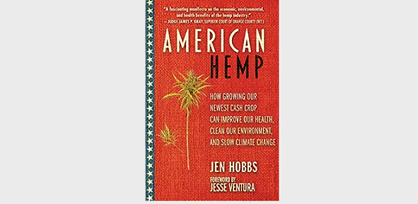

Wearing Organic Hemp to save the earth with style
Organic Hemp is a sustainable and eco-friendly fabric made with the versatile plant Hemp that can be used for things as small makeup products, to as strong as concrete, to as tasty as energy bars, and of course ... stylish clothes.
Stay updated and connected! Join our HempNews!Full Name
Title
.. lets talk hemp ! type something !
Podcast
a podcast on Hemp
Check out the most popular podcast in the hemp sector. Together with Loudest Show On Earth Productions, it was created. Their goal is to be the top media outlet dedicated to promoting an informed and open dialogue about hemp and its enormous potential. They work to link people, businesses, and communities interested in the hemp industry by offering a reliable source of news, insights, and instructional content. Through their platform, they want to push for the responsible and sustainable expansion of the hemp industry and empower, inspire, and advocate for change for the earth and people everywhere. The truth shall speak louder than anything.
Books
div into the pros on Hemp
This publication is available as an eBook in multiple formats as well as a print edition through Amazon
The book American Hemp explores the many uses for this crop, what makes it a superior commodity, and why it was deemed illegal in the first place. It also explores the many health and medical advantages of the plant. Hobbs offers her opinion on how hemp may advance several industries, including farming, energy production, and 3D printing, as well as how it can significantly reduce climate change by eliminating toxins from the soil and reducing our reliance on plastics and fossil fuels.